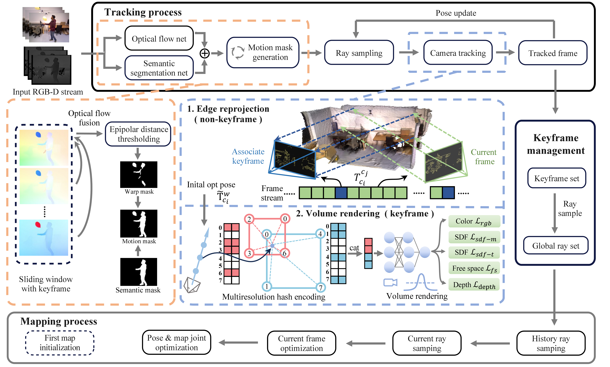
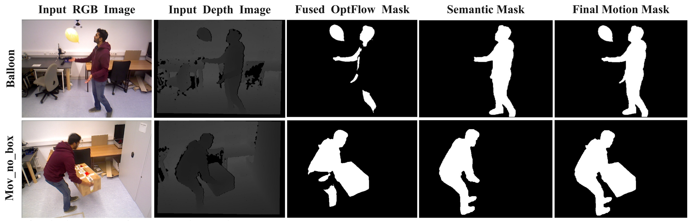
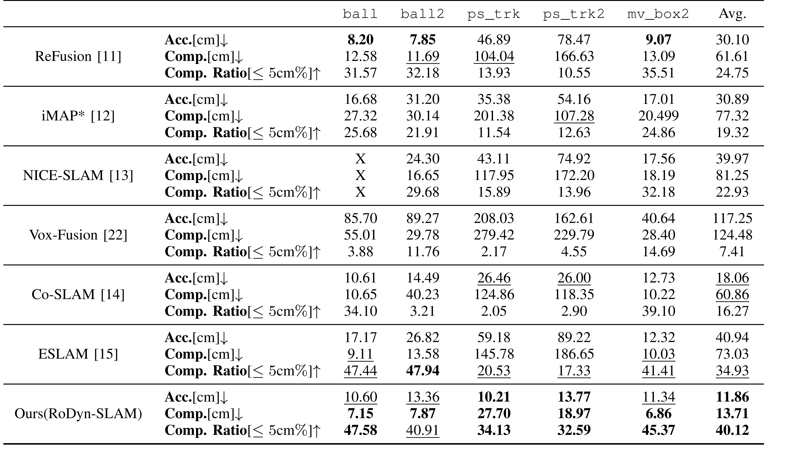
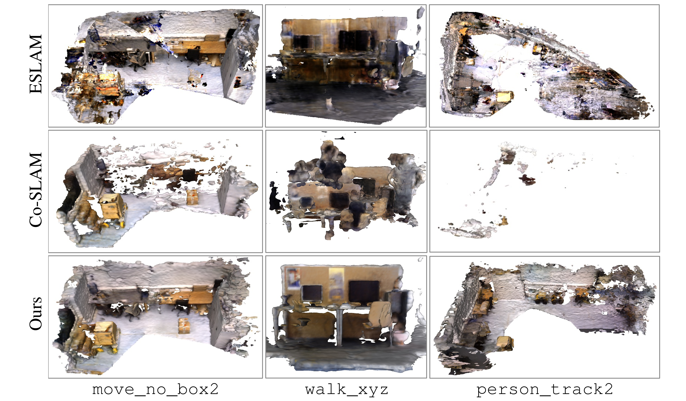
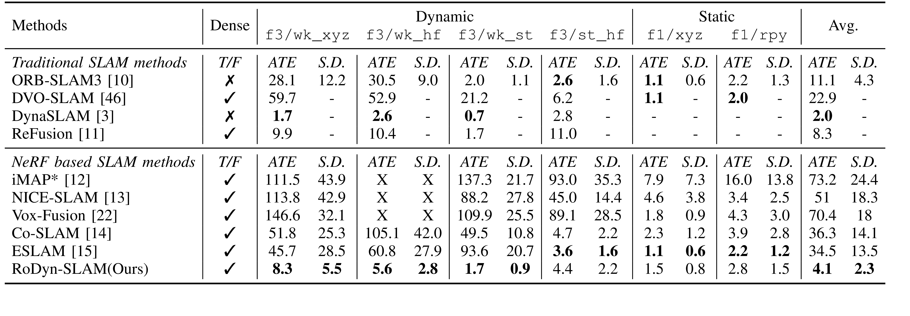
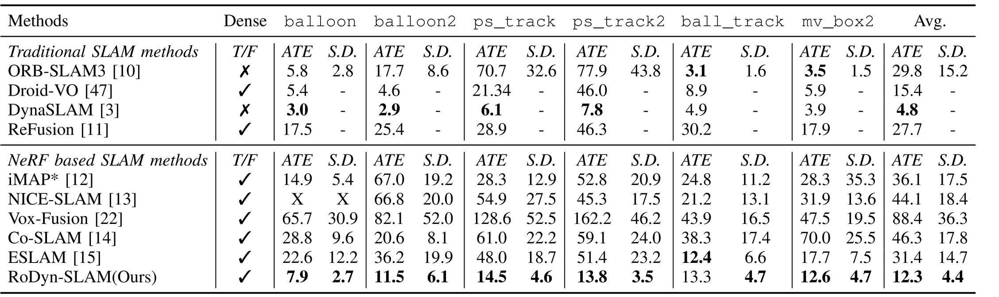
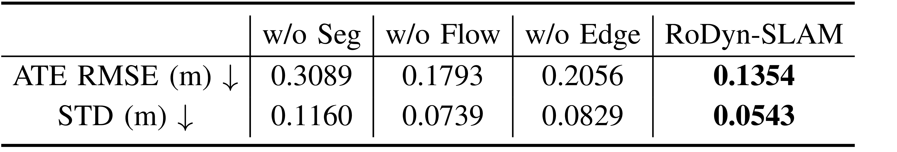
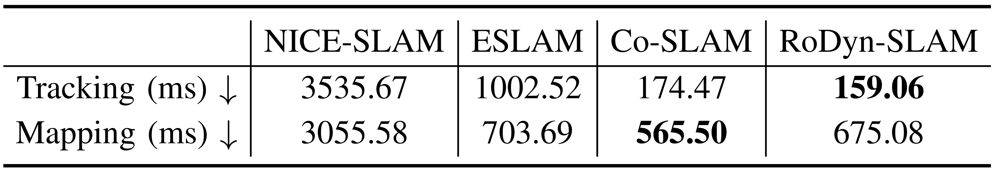
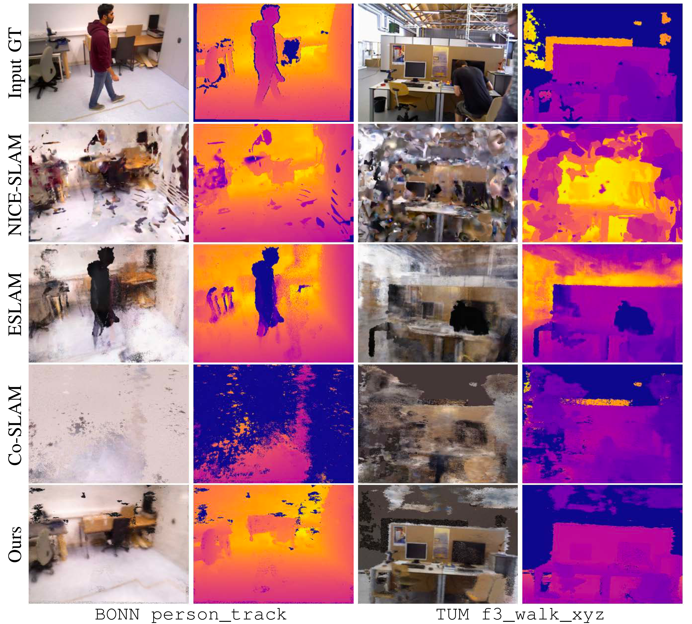

RoDyn-SLAM의 문제의식은 간단하다. NeRF 기반 dense RGB-D SLAM은 color/depth rendering residual로 pose와 map을 함께 맞추는데, 움직이는 사람이나 물체가 residual에 들어오면 tracking residual과 implicit map이 동시에 오염된다.

Figure 1. RoDyn-SLAM system overview.RGB-D stream에서 motion mask를 만들고, keyframe은 rendering loss로, non-keyframe은 edge warp loss로 pose를 최적화한다.
Problem Flow
동적 객체를 별도 복원 대상으로 보기보다, static neural map을 안정화하기 위해 믿을 수 없는 observation을 제거하는 문제로 둔다.
Eq. (5). Final motion mask fusion.sliding window의 warp-flow mask와 semantic mask를 결합해 최종 motion mask를 만든다.

Figure 2. Qualitative results of the generation motion mask.Optical-flow mask는 실제 motion cue를, semantic mask는 category prior를 제공한다. 최종 mask는 두 cue를 결합해 false positive와 false negative를 줄인다.
3. Joint optimization for keyframes
Keyframe에서는 masked photometric/depth rendering loss와 SDF geometric constraint를 함께 사용한다. dynamic region의 color/depth residual을 빼야 static field가 사람이나 움직이는 물체를 학습하지 않는다.
평가는 task 기준으로 나누는 편이 읽기 좋다. mapping은 BONN RGB-D의 mesh reconstruction 지표로, tracking은 TUM/BONN의 ATE로, 모듈 효과는 ablation/runtime으로 확인한다.
Evaluation Brief
핵심 메시지는 neural RGB-D SLAM 계열 대비 dynamic scene robustness가 크게 개선된다는 것이다.
Mapping
BONN 평균 Accuracy \(11.86\)cm, Completion \(13.71\)cm.
Tracking
TUM 평균 ATE \(4.1\)cm, BONN 평균 ATE \(12.3\)cm.
Ablation
semantic, flow, edge loss를 빼면 모두 ATE가 악화.
Mapping evidence

Table I. Quantitative mapping results on BONN-RGBD dynamic sequences.RoDyn-SLAM은 Co-SLAM/ESLAM 대비 accuracy와 completion을 함께 개선하며, dynamic object로 인한 floaters와 hole을 줄인다.

Figure 3. Visual comparison of reconstructed meshes.ESLAM/Co-SLAM은 동적 객체가 지나간 영역에서 ghost geometry나 누락이 보이고, RoDyn-SLAM은 static mesh가 더 안정적이다.
Tracking evidence

Table II. Camera tracking results on TUM RGB-D.RoDyn-SLAM은 neural RGB-D SLAM 계열보다 dynamic sequence에서 낮은 ATE를 보이며, static sequence에서도 baseline 성능을 크게 해치지 않는다.

Table III. Camera tracking results on BONN RGB-D Dynamic.BONN의 더 복잡한 dynamic sequence에서도 Co-SLAM, ESLAM, NICE-SLAM 대비 tracking error가 크게 줄어든다.
Ablation / runtime / rendering

Table IV. Ablation study.Semantic mask, optical-flow mask, edge loss를 제거한 경우 모두 full RoDyn-SLAM보다 ATE가 커진다.

Table V. Runtime comparison.tracking/mapping 자체의 시간은 Co-SLAM과 비슷한 수준이지만, optical flow와 semantic segmentation 비용은 별도 병목으로 남는다.

Figure 4. Visual comparison of rendered static implicit maps.동적 객체가 남은 baseline은 rendered image에 잔상과 깨진 geometry가 나타나지만, RoDyn-SLAM은 더 일관적인 static rendering을 만든다.
Usage / Limits: 언제 쓰기 좋은가
RoDyn-SLAM은 동적 객체가 자주 등장하지만 최종적으로는 정적 배경의 dense map이 필요한 RGB-D SLAM 문제에 적합하다. 기존 neural RGB-D SLAM이 동적 ray를 map에 학습해 잔상과 tracking drift가 생기는 상황에서 효과가 크다.
When to Use / Avoid
RoDyn-SLAM은 dynamic-aware neural mapping 시스템으로 읽어야 하며, pure tracking-only dynamic SLAM과 같은 기준으로만 비교하면 장점이 흐려진다.
상황
적합도
이유
Indoor RGB-D dynamic scene
높음
motion mask와 edge loss가 모두 RGB-D 입력을 전제로 설계됨
Dense static reconstruction
높음
동적 객체를 제거한 static implicit map을 만드는 것이 목표
Real-time deployment
주의
semantic/optical-flow module 비용이 있고 논문도 real-time 최적화 전이라고 언급
Tracking-only benchmark
비교 주의
DynaSLAM 같은 conventional dynamic SLAM은 일부 ATE가 더 낮지만 dense neural map은 제공하지 않음
Problem: where do dynamic objects break neural RGB-D SLAM?
RoDyn-SLAM targets a direct failure mode: moving objects contaminate both rendering residuals for tracking and the neural implicit map.
Figure 1. RoDyn-SLAM system overview.The pipeline builds motion masks, optimizes keyframes through rendering losses, and refines non-keyframes through edge warp loss.
Related Work details
Where RoDyn-SLAM sits
RoDyn-SLAM sits between conventional dynamic SLAM, which is strong at filtering moving features, and neural RGB-D SLAM, which produces dense implicit maps but usually assumes static scenes.
Mechanism: how do motion masks and split pose optimization work together?
The method combines a Co-SLAM-like implicit field, dynamic-ray filtering, and different pose updates for keyframes and non-keyframes.
Mechanism Brief
The main contribution is a system-level design for deciding which residuals are trustworthy in dynamic neural SLAM.
$$
f_{\beta}\left(\gamma(x),V_{\alpha}(x)\right)\mapsto(h,s),\qquad f_{\phi}\left(\gamma(x),h\right)\mapsto c \tag{1}
$$
Eq. (1). Implicit map decoder.Predicts SDF \(s\), geometry feature \(h\), and color \(c\) from the coordinate/hash feature of a 3D point \(x\).
Eq. (2). Ray rendering for color and depth.Accumulates samples along a ray with SDF-derived weights to obtain rendered color \(\hat C(r)\) and depth \(\hat D(r)\).
Eq. (3). SDF-to-weight conversion and depth variance.Assigns larger weights to samples near the surface inside the truncation band; the depth variance represents uncertainty in the depth residual.
Eq. (4). Optical-flow warp mask from epipolar inconsistency.Builds a candidate dynamic mask from how far optical-flow correspondences deviate from the epipolar constraint.
Eq. (12). Non-keyframe pose update.Refines a non-keyframe's relative pose using the edge loss to its nearest keyframe.
Figure 2. Qualitative results of motion mask generation.Optical flow provides motion cues, while semantic masks provide category priors.
Notation / implementation details
Optimization setup
Implementation settings follow the core method because they support it rather than define the main contribution.
Item
Setting
Role
Sampling
\(N_t=1024\) rays, \(N_p=85\) points/ray
Limits tracking and map-update compute
External modules
OneFormer, RAFT-GMA, Canny
Semantic prior, optical flow, and edge extraction
Evidence: what improves in dynamic scenes?
Experiments are grouped by mapping, tracking, ablation, runtime, and rendering quality.
Table I. Quantitative mapping results on BONN-RGBD dynamic sequences.RoDyn-SLAM improves accuracy and completion over neural RGB-D SLAM baselines.Figure 3. Visual comparison of reconstructed meshes.The reconstructed mesh contains fewer dynamic-object artifacts.Table II. Camera tracking results on TUM RGB-D.RoDyn-SLAM has lower ATE than neural RGB-D SLAM baselines on dynamic sequences.Table III. Camera tracking results on BONN RGB-D Dynamic.The trend remains on more challenging BONN dynamic sequences.
Table IV. Ablation study.Removing semantic mask, optical-flow mask, or edge loss increases ATE.Table V. Runtime comparison.Tracking/mapping is comparable to Co-SLAM, but external mask modules remain extra cost.
RoDyn-SLAM is well suited to RGB-D SLAM problems where dynamic objects appear frequently but the desired output is a dense map of the static background. It is especially useful when dynamic rays would otherwise leave artifacts in the neural map and induce tracking drift.
When to Use / Avoid
RoDyn-SLAM should be read as a dynamic-aware neural mapping system. Comparing it only with tracking-only dynamic SLAM obscures its main advantage.
Scenario
Fit
Why
Indoor RGB-D dynamic scene
High
Both the motion mask and edge loss are designed around RGB-D input.
Dense static reconstruction
High
The goal is to build a static implicit map with dynamic objects removed.
Real-time deployment
Caution
Semantic and optical-flow modules add cost, and the paper notes that the system is not yet optimized for real time.
Tracking-only benchmark
Compare carefully
Conventional dynamic SLAM such as DynaSLAM can achieve lower ATE in some cases, but it does not produce a dense neural map.